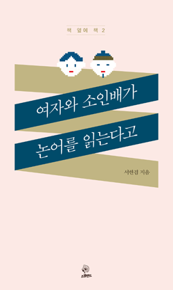

p8
이렇게 겨우 의욕을 냈는데 <맹자>에서 다음 구절을 발견했다. "지역에서 인정받으면 그 지역의 뛰어난 사람과 어울리고, 나라에서 인정받으면 전국의 뛰어난 사람들과 어울리고, 세계적으로 인정받으면 전 세계의 뛰어난 사람과 어울리게 된다. 세계적으로 뛰어난 사람과어울리는 것도 부족하면 거슬러올라가 오래된 책을 읽고 옛사람을 친구 삼는다."
옛 책 친구가 이런거였다니... 내가 외롭다고 멋대로 옛 책을 친구 삼을 수 있는게 아니었어.
p13
그냥 나면서부터 아는 사람이 제일이고, 배워서 아는 사람은 그다음, 곤란해져서 배우는 사람은 그다음이다. 곤란한 지경에 처해서도 배우지 않는 사람은 일반인 중에서도 최하다.
장인이 연장과 도구 사용하는 방법을 가르쳐줄 수는 있어도 그 기술을 익혀 숙달하도록 만들어 줄 수는 없다.
슬쩍 희망이 솟아나려 한다. 마음과 뜻을 다하면 배울 수 있고, 연장과 도구 사용법 정도는 배울 수 있다는 말로 이해하고 싶다. 하지만 자세히 읽어보면 마음과 뜻을 쏟지 않으면 못 배운다는 거지, 온 마음과 온 뜻을 다한다고 반드시 잘하게 된다는 말은 아니다. 가르쳐줄 수는 있어도 이해하고 연습하고 익숙해지고 잘하게 되는 것은 배우는 사람 몫이라며 책임을 칼같이 미뤄놓는다. 맹자가 이렇다...
많은 이들이 이 말을 좋아하고 자주 인용한다. 주로 공부 못해도 괜찮으니 좋아하는 걸 하다보면 성공할 거다, 정도의 맥락으로 쓰인다. 하지만 아쉽게도 '실력보다는 즐기는 게 최고'라는 말은 아니다. 잘 알고 좋아해서 자연스럽게 즐기는 경지에 이르러라, 게으름 피우지 말고 핑계 대지 말고 잘 좀 해라, 잘할 때까지 계속해서 즐겨봐, 채근하는 쪽에 가깝다.
p28
"윗사람이 해서 싫었던 행동을 아랫사람에게 하지 마라. 아랫사람이 해서 싫었던 방법으로 윗사람을 섬기지 마라. 내가 뒤에 있을 때 앞선 사람에게서 본 싫어하는 모습으로 뒷사람을 이끌지 말고 앞에 있을 때 뒷사람에게서 본 싫어하는 모습으로 앞사람을 따르지 마라. 내가 왼쪽에 있을 때 오른쪽에게서 본 싫어하는 모습으로 왼쪽과 사귀지 말고 오른쪽에 있을 때 왼쪽에게서 본 싫어하는 모습으로 오른쪽과 사귀지 마라."
모두모두 이렇게 하면 좋겠다. 위아래 앞뒤 양옆으로 평안해질 것 같다.
p57
유능함으로 다른 사람을 복종시킬 수 없다. 다른 사람 또한 능력 있고 좋은 사람이 되도록 기르고 키우고 돕고 나서야 온 세상 사람을 복종시킬 수 있다. 온 세상 사람들이 마음으로 복종해야 천하의 왕이 될 수 있다.
p67
힘의 문제에 있어서만큼은 맹자는 어질어야 한다거나 자신을 갈고 닦으라고 하지 않는다. 강자와 약자의 관계, 그러니까 타인, 다른 세력들과의 관계 안에서 '네가 할 수 있는 일을' 잘하라고 할뿐이다. 괜찮아, 힘 내, 할 수 있어! 이런 다정한 말은 해주지 않는다. 오히려 '한탄하면 뭐 할 건데? 할수 있는 거나 잘해'에 가깝다.
p79
[논어 13.3] 군자는 자기가 알지 못하는 것에 대해서는 대체로 가만히 있는 것이다.
p80
[논어 2.17] 아는 것을 안다고 하고 모르는 것을 모른다고 하는 것, 이것이 아는 것이다.
무언가를 전혀 또는 너무 많이 모르면 내가 '모른다'는 사실 자체를 모른다. 이럴 때는 내가 모르는 세상, 모르는 모든 것들의 존재 자체를 모르므로 자기가 아는 한에서(물론 틀린 내용을) 자신 있게 말하고 행동하기도 한다.
p122
1,500원짜리 샌드위치를 반씩 나눠 먹던 커플의 얼굴에 기쁨과 만족과 미래에 대한 희망과 막 그러한 것들이 가득 차 모든 근육을 위로 밀어올리고 있는 광경을 본 적이 있다. 사랑하지만 정말로 어쩔 수 없는 상황은 드물다. 사랑은 하겠지, 하지만 '어쩔 수 없는' 건 아니다. 어쩔 수는 있는데 그렇게 할 만큼 사랑하지는 않는 것뿐. 상대방보다 더 중요한게 있는 것뿐.